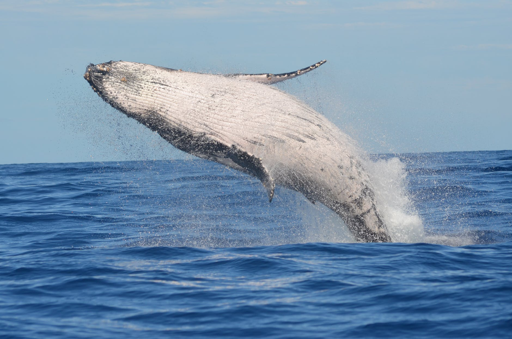
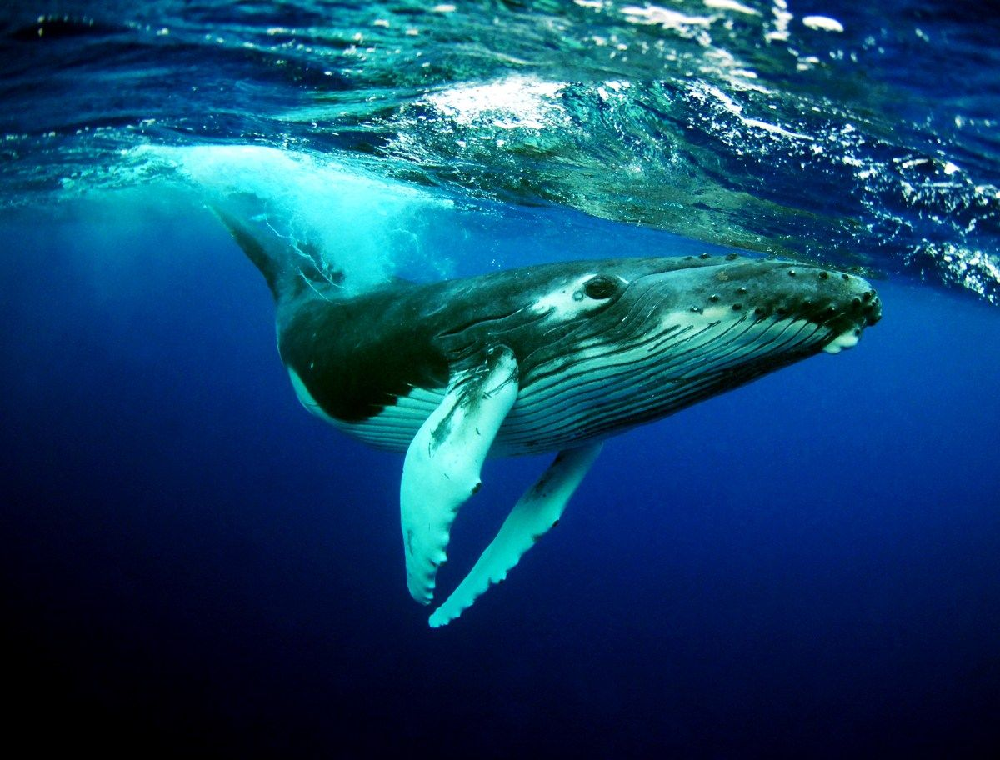

სიახლე 1
შემთხვევითად გენერირებული ტექსტი ეხმარება დიზაინერებს და ტიპოგრაფიული ნაწარმის შემქმნელებს, რეალურთან მაქსიმალურად მიახლოებული შაბლონი წარუდგინონ შემფასებელს.

სიახლე 2
შემთხვევითად გენერირებული ტექსტი ეხმარება დიზაინერებს და ტიპოგრაფიული ნაწარმის შემქმნელებს, რეალურთან მაქსიმალურად მიახლოებული შაბლონი წარუდგინონ შემფასებელს.
სიახლე 3
შემთხვევითად გენერირებული ტექსტი ეხმარება დიზაინერებს და ტიპოგრაფიული ნაწარმის შემქმნელებს, რეალურთან მაქსიმალურად მიახლოებული შაბლონი წარუდგინონ შემფასებელს.